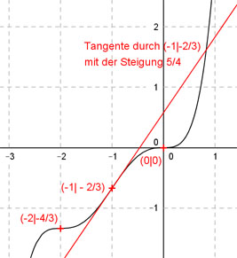

Aufgabe 108 Der Graph einer ganzrationalen Funktion 5. Grades geht durch (0|0), hat in (-1|-2/3) einen Wendepunkt mit der Steigung 1,25 und einen bei (-2|-4/3). Wie lautet seine Funktionsgleichung?  Allgemeine Form einer ganzrationalen Funktion 5. Grades: f(x) = ax5 + bx4 + cx3 + dx2 + ex + f f’(x) = 5ax4 + 4bx3 + 3cx2 + 2dx + e f’’(x) = 20ax3 + 12bx2 + 6cx + 2d 6 Bedingungen : 1. Geht durch (0|0) bedeutet: f(0) = 0 --> a * 05 + b * 04 + c * 03 + d * 02 + e * 0 + f --> f = 0 2. Hat in (-1|-2/3) einen Wendepunkt bedeutet zum einen: (f = 0 eingesetzt) f(-1) = -2/3 --> a * (-1)5 + b * (-1)4+ c * (-1)3 + d * (-1)2 + e * (-1) = -2/3 --> -a + b - c + d - e = -2/3 I 3. Hat in (- 1|- 2/3) einen Wendepunkt bedeutet zum anderen: f’’(-1) = 0 --> 20a * (-1)3 + 12b * (-1)2 + 6c * (-1) + 2d = 0 --> -20a + 12b - 6c + 2d = 0 II 4. Hat in (-1|-2/3) einen Wendepunkt mit der Steigung 1,25 bedeutet: f’(-1) = 1,25 --> 5a * (-1)4 + 4b * (-1)3 + 3c * (-1)2 + 2d * (-1) + e = 1,25 --> 5a - 4b + 3c - 2d + e = 1,25 III 5. Hat in (-2|-4/3) einen Wendepunkt bedeutet zum einen: (f = 0 eingesetzt) f(-2) = -4/3 --> a * (-2)5 + b * (-2)4 + c * (-2)3 + d * (-2)2 + e * (-2) = -4/3 --> -32a + 16b - 8c + 4d - 2e = -4/3 IV 6. Hat in (-2|-4/3) einen Wendepunkt bedeutet zum anderen: ’’(-2) = 0 --> 20a * (-2)3 + 12b * (-2)2 + 6c * (-2) + 2d = 0 --> -160a + 48b - 12c + 2d = 0 V I + III -a + b - c + d - e = -2/3 5a - 4b + 3c - 2d + e = 1,25 ----------------------------- 4a - 3b + 2c - d = 1,25 -2/3 = 5/4 - 2/3 = 15/12 - 8/12 = 7/12 4a - 3b + 2c - d = 7/12 VI I * (-2) + IV 2a - 2b + 2c - 2d + 2e = 4/3 -32a + 16b - 8c + 4d - 2e = -4/3 --------------------------------- -30a + 14b - 6c + 2d = 0 VII II + VI * (-2) -20a + 12b - 6c + 2d = 0 - 8a + 6b - 4c - 2d = -7/6 ---------------------------- -28a + 18b - 10c = -7/6 VIII V + VI * 2 -160a + 48b - 12c + 2d = 0 8a - 6b + 4c - 2d = 7/6 ----------------------------- -152a + 42b - 8c = 7/6 IX II * (-2) * VII 40a - 24b + 12c - 2d = 0 -30a + 14b - 6c + 2d = 0 --------------------------- 10a - 10b + 6c = 0 X VIII * 6 + X * 10 -168a + 108b - 60c = -7 100a - 100b + 60c = 0 ------------------------ -68a + 8b = -7 XI VIII * (- 8) + IX * 10 224a - 144b + 80c = 56/6 -1520a + 420b - 80c = 70/6 --------------------------- -1296a + 276b = 126/6 = 21 XII XI * 276 + XII * (-8) -18768a + 2208b = -1932 10368a - 2208b = -168 -8400a = -2100 |:(-8400) a = 1/4 = 0,25 a = 0,25 in XI eingesetzt: -68 * 0,25 + 8b = -7 -17 + 8b = -7 |+17 8b = 10 |:8 b = 5/4 = 1,25 a = 0,25 und b = 1,25 in X eingesetzt: 10 * 0,25 - 10 * 1,25 + 6c = 0 2,5 - 12,5 + 6c = 0 -10 + 6c = 0|+10 6c = 10 |:6 c = 5/3 a = 0,25 und b = 1,25 und c = 5/3 in VII eingesetzt: -30 * 0,25 + 14 * 1,25 - 6 * 5/3 + 2d = 0 -7,5 + 17,5 - 10 + 2d = 0 2d = 0 |:2 d = 0 a = 0,25 und b = 1,25 und c = 5/3 und d = 0 in III eingesetzt: 5 * 0,25 - 4 * 1,25 + 3 * 5/3 + d * 0 + e = 1,25 1,25 - 5 + 5 + e = 1,25 1,25 + e = 1,25 |-1,25 e = 0 Gesuchte Funktionsgleichung: f(x) = 0,25x5 + 1,25x4 + (5/3)x2